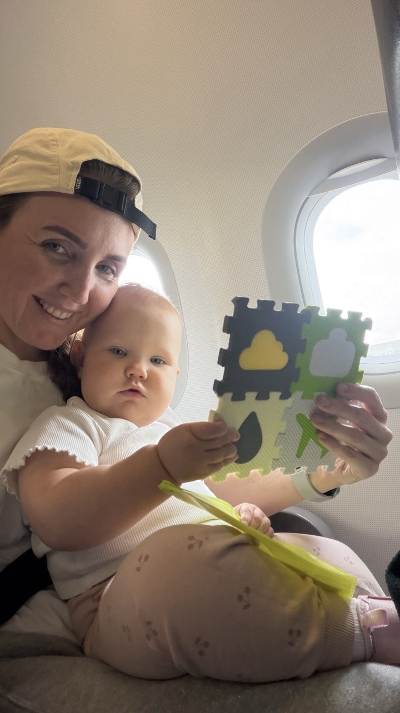

Перелёт с малышом
до года
Практический гайд из нашего личного опыта. Как выбрать рейс и места, разобраться с люлькой и подготовиться к путешествию с малышом.
Выбор рейсаМеста в самолётеЛюлька
Версия для просмотра в интернете.
Привет, я Луиза. Здесь — моя жизнь с дочкой, наши путешествия и гайды, в которых собран личный опыт.
Смотреть гайды
Я Луиза — мама Стеши. Пишу о материнстве без идеальной картинки и о путешествиях, в которые мы берём дочку с собой.
Люблю делиться тем, что попробовала сама: что пригодилось в дороге, что облегчило быт и что я бы сделала иначе. Чтобы полезное не терялось среди постов, собираю его здесь — в гайдах.
Можно читать сейчас или сохранить на потом.
Практический гайд из нашего личного опыта. Как выбрать рейс и места, разобраться с люлькой и подготовиться к путешествию с малышом.
Версия для просмотра в интернете.
Наши будни, поездки и материнство как оно есть.